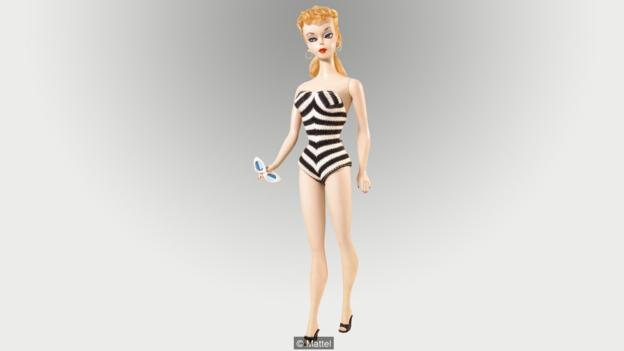

The changing faces of Barbie
Move over Hillary Clinton. Another female presidential candidate is set to enter the race this Autumn: Barbie. Make that Barbies, because, for her sixth run for the Oval Office, the plastic pop-culture icon will be sold as a two-doll Barbie president and vice-president set in a range of skin tones.
The concept is in line with what Richard Dixon, president and chief operating officer of Barbie’s California-based maker Mattel, described as an ambitious “diversity revolution” for the plastic icon. “It’s a far cry from the Barbies of dated ethnic old,” he declared at a recent conference in Los Angeles. Stepping down from her princess pedestal with the aid of a new flexible flat foot that, according to Dixon, has “liberated Barbie from high heels”, the new Everywoman Barbie (recently resculpted in three “real woman” body types – tall, petite and curvy) even comes with her own Darwinesque hashtag, #TheDollEvolves and slogan: “Imagination comes in all shapes and sizes. That’s why the world of Barbie is evolving.”
Leading the pack is Hello Barbie, the world’s first artificial intelligence-enabled Barbie doll, a hi-tech conversationalist that landed the cover of The New York Times Magazine in the run up to its November release, accompanied by the headline “Now I have a Brain!” With sluggish sales and Mattel’s blockbuster American Girl, a somewhat more wholesome PC rival nipping at her candy pink mules, it’s time for Barbie to get real.
Barbie girl
Curiously perhaps, the brains behind the original Barbie design, in all her pneumatic-breasted glory, was a woman, Ruth Handler. The visionary entrepreneur and saleswoman is credited as the driving force behind her inventor husband Elliot Handler, co-founder of Mattel. But Barbie was her project and her idea, confirms Anne Monier, curator of the current Barbie exhibition at Les Arts Décoratifs in Paris, where visitors get to explore the doll’s many ‘lives’ within a historical and sociological context to the helium soundtrack of ‘90s Aqua hit Barbie Girl.
Ruth Handler was watching her daughter Barbara (after whom Barbie was named) playing with paper dolls when she came up with the idea of a doll based on a woman, as opposed to a baby or child. The concept was to revolutionise the toy market but it had links to tradition, says Monier, who chose to open the Barbie show with a collection of adult dolls from the early 19th Century dressed in the fashions of the day.
Handler’s idea crystallised on a trip to Switzerland in 1956 when she came across a doll produced by the German tabloid Bild, based on the character in its popular comic strip, Lilli. “She was this saucy pin-up who was always getting into situations with men,” laughs Monier. “For example, there’s one episode where she’s in a white dress with hand prints over her breasts and bottom with the caption “My car broke down and if the mechanic hadn’t been there to give me a hand, I would still be waiting by the roadside.” Ruth Handler’s daughter was a married woman by the time Barbie – full name Barbara Millicent Roberts; profession, teenage fashion model – was finally released in 1959 after years spent trying to convince Mattel management she was onto a winner. Boasting a physique based on the dream (read: unrealistic) vital statistics of Hollywood stars like Liz Taylor and Marilyn Monroe, Barbie’s first outfit, a zebra-striped bustier swimsuit, was designed to be telegenic for the brand’s black-and-white TV commercials. From the cat-eye shades to hoop earrings and mules, everything was removable, with a wardrobe of itsy-bitsy creations lined up for fans to splash their pocket money on. The idea took off. A wall at the end of the exhibition in Paris presents 7,000 Barbie wardrobe designs arranged in a rainbow spectrum.